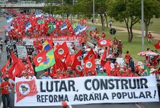

QUESTÃO AGRÁRIA

MUNDO ROMANO: Um dos problemas enfrentados pelos políticos romanos era a questão da terra, ligada à grande desigualdade social que afetava a maior parte da população. Os irmãos Tibério e Caio Graco, eleitos sucessivamente tribunos da plebe, tentaram resolver a crise por meio de reformas destinadas a atender às reivindicações populares.
ATUALIDADE: Marcha de integrantes do MST (Movimento dos Sem-Terra) em Brasília, encerrando o 5º Congresso do movimento. A bandeira da reforma agrária, defendida pelo MST no Brasil, já era motivo de intensos conflitos na Roma Antiga.